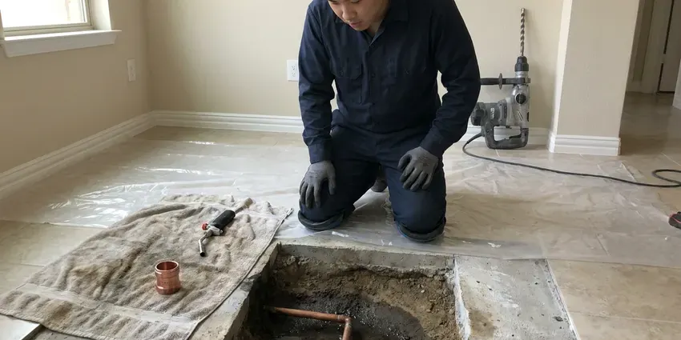

Gas Water Heater Repair in Cheyenne, WY
Our licensed plumbers in Cheyenne, WY fix natural gas and propane water heaters, with combustion and draft checks on every visit.
- Same-Day Gas Heater Repair
- Pilot and Thermocouple Repair
- Warrantied Workmanship
- Labor Guarantee

No Hot Water in Cheyenne, WY? We Fix Gas Heaters.
We leak test and check draft before we wrap up.
Pilot, Valve & Vent Repair for Gas Water Heaters in Cheyenne, WY
JKV Plumbing repairs every vent style of gas water heater in Cheyenne, from a plain atmospheric tank on a metal flue to a power vent unit pushing exhaust through PVC. We fix both natural gas and propane heaters. We replace thermopiles and gas controls on the spot.
Some of what we do:
- Thermostat & Gas Valve Replacement
- Power vent blower, pressure switch and flue draft repairs
- Pilot & Burner Repairs

Additional Plumbing Repair Services in Cheyenne, WY
We offer expert plumbing repair services across Cheyenne, WY to fix leaks, restore flow, and keep your system running smoothly.


Customers
Why Choose JKV Plumbing for Gas Water Heater Repair in Cheyenne, WY?
Quality parts last longer, so we install factory controls and listed universal valves, not the cheapest kit on the shelf. We want the fix to last, not just get you through the week. Cheap thermocouples fail fast. The tank also gets a quick look at the anode and the relief valve, since those tell us how much life it has left.
- Gas Safety, Every joint we open gets leak tested before the heater is relit.
- Repairs That Last, Factory or listed parts go in, so the fix holds.
- Gas Leak Testing, Every gas connection we touch is tested with an electronic detector and bubble solution.
Citywide Coverage
Downtown or out on the edges of Cheyenne, a JKV Plumbing tech can usually reach you the same day, often within a few hours. Booking takes a few minutes. Most calls get a two-hour arrival window.
Experienced Team
The team has handled everything from a five-minute pilot relight to a power vent motor swap and a full flue rebuild. Very little catches them off guard. Your call gets a tech who has done it before.
Safety-First Approach
Meeting code is part of the work, not an add-on. Each repair follows the local plumbing code in Wyoming along with the national fuel gas standards that cover venting and clearances to anything that can burn. Inspectors rarely find anything.
Trusted Certified Cheyenne Plumbing Services Professionals
At JKV Plumbing, we are proud to offer certified plumbing services throughout Cheyenne, WY. Those papers on the wall mean something. Our plumbers hold recognized industry credentials, and they follow strict safety and quality rules on every repair, installation and maintenance call we run.
Call Us Now PHCC Plumbing Contractor Recognition
PHCC Plumbing Contractor Recognition Better Business Bureau (BBB) Accreditation
Better Business Bureau (BBB) Accreditation Angi Certified Pro
Angi Certified Pro ISO 9001 Quality Management Certification
ISO 9001 Quality Management CertificationWhat Our Gas Water Heater Service Calls Cover in Cheyenne, WY
Burner Cleaning and Repair in Cheyenne, WY
Yellow flame tips, soot on the burner door or a roaring sound at startup all mean the burner is not getting clean air. We pull the burner, brush the ports and blow out the orifice. We also confirm the orifice is drilled for the fuel you have, because a natural gas orifice on a propane heater, or the reverse, will soot up the flue and push carbon monoxide levels well past normal. A good flame is blue and steady. Rust flakes on the burner send us to check the flue baffle next.

Repair or Replace: Straight Answers in Cheyenne, WY
Before any wrench turns, you get a written price for the repair and an honest read on the tank in your Cheyenne, WY home. A bad thermocouple on a six-year-old tank is an easy repair to justify. A fourteen-year-old tank with a rusty flue, a leaking bottom and a failed gas valve is a different story, and putting a $500 control on it rarely makes sense. We will tell you which side of that line you are on. You make the call.
Flammable Vapor Sensor Repair in Cheyenne
Since about 2003, most residential gas tanks have been built with a flammable vapor ignition resistant combustion chamber. A flame arrestor screen at the base lets air in and keeps flame from getting out. When lint, dust or pet hair coats that screen, the burner starves, the chamber overheats and a thermal switch shuts the whole heater down, sometimes several times a week. We clean the screen and the chamber. A tripped thermal switch gets replaced.
All Major Gas Water Heater Brands Repaired in Cheyenne
Every brand label we see in garages and closets uses one of a handful of gas control designs. Rheem and Ruud share most parts, and State shares a lot with A.O. Smith. Bradford White runs its own control system, so we stock those separately. Knowing which family a heater belongs to lets the tech bring the right valve, thermocouple or igniter on the first trip instead of ordering parts and coming back two days later. Model and serial numbers help.
Pilot Light & Burner Issues in Cheyenne
A pilot that lights, holds for ten seconds and then goes out is almost always a thermocouple or a weak magnet in the gas valve. A pilot that will not light at all is more often a clogged orifice or a dead igniter. Burner trouble looks different. The pilot stays lit but the main flame never comes on, which points to the thermostat side of the valve, a tripped thermal cutoff or a flame arrestor so clogged with lint that the burner starves for air. We test each piece in that order.
Gas Valve and Thermostat Repair in Cheyenne, WY
Lukewarm showers and a tank that never catches up often trace back to the gas control. The tech checks the dial, the immersion sensor and the outlet pressure with a manometer. On most residential tanks the thermostat lives inside the gas valve body, so a bad sensor or a stuck magnet usually means replacing the whole control rather than one small part. Plan on roughly an hour for the swap. Every joint on the new valve gets leak tested.
Pilot Light Repair in Cheyenne
The thermocouple is the first thing we test when a pilot will not stay lit. A millivolt meter tells us in about a minute whether it is producing enough current. If it reads fine, the next suspects are a clogged pilot orifice, a cracked piezo wire or a thermal cutoff that tripped because the combustion chamber overheated from blocked air. Figure on roughly an hour for most pilot repairs.

Power Vent Water Heater Repair in Cheyenne
Power vent heaters push exhaust through PVC with a blower on top of the tank. The usual failures are the blower motor, the pressure switch and the hot surface igniter. Condensate pooling in a vent with the wrong slope can also trip the pressure switch, so we check the pipe run all the way to the termination before we sign off on a part. We read the error code first. Every suspect part then gets tested with a meter.
Gas Water Heater Repair Near Me in Cheyenne, WY
Garage heaters pull in dust and dryer lint that clog the flame arrestor and trip the thermal switch over a few months. We clean the screen and chamber during the repair. Paint cans and gas cans near the heater get pointed out. Fewer pilot outages follow.
Close by is only half of it. The tech also needs years of hands-on time with gas controls and vents. Our plumbers handle pilots, valves, burners and flues every week, and they carry a manometer and a combustion analyzer so they can confirm the heater is burning cleanly before they leave. One trip handles most calls.
JKV Plumbing at a Glance
- Fully licensed plumbing team covering Cheyenne, WY
- 24/7 emergency service with same-day scheduling
- Upfront, flat-rate pricing before work begins
- 4.9-star rated by 782+ Wyoming customers
Cheyenne Map
Cheyenne Information
- Population
- 65,168
- Area codes
- 307/970/720
- Service area
- Cheyenne and communities within 40 miles
- Nearby
- Ranchettes, Laramie, Torrington, Douglas
Many rural homes in Wyoming draw from private wells, and well water can carry sulfate, iron or other minerals that affect taste and fixtures. A gas tank that gets flushed and checked once a year holds steady hot water longer.
Expert Services
Reach out to JKV Plumbing for honest, reliable plumbing from people who know the trade in Cheyenne, WY.
Our Specialized Plumbing Services in Cheyenne, WY
At JKV Plumbing, you get every kind of plumbing service from one company across Cheyenne, WY. We go from leak detection all the way to full system installations, for homes and commercial buildings, and we do it quickly at a fair price. Explore our core services below:


The Gas Water Heater Repair Process in Cheyenne, WY
A gas water heater repair should be fast, safe and priced up front.
Call Us
Reach JKV Plumbing at (307) 393-4049 and describe the problem. We schedule a tech for a time that works at your Cheyenne home.
On-Site Diagnosis
The plumber runs the tests and finds what actually failed. You see the readings.
Upfront Estimate
A written estimate comes before the first wrench turns. Repair and replacement options are both on the table if the tank is old.
Frequently Asked Questions About Gas Water Heater Repair in Cheyenne
Most gas water heater repairs in Cheyenne, WY land between $150 and $800. Thermocouple and pilot work is the cheap end, roughly $150 to $350. A gas control valve replacement usually runs $400 to $800 or more once you add the part, the labor and the leak testing on every joint we disturb. We quote once we know the cause.
They do. Our labor warranty covers the repair itself, and the part maker covers the part. The exact length depends on the component, so a new gas valve and a new thermocouple may carry different terms, and the invoice spells out each one in plain language before we leave. Hang on to that paperwork.
Following the label to relight a pilot is fine. Swapping gas valves, thermocouples or vent sections should be left to a licensed plumber. A bad gas joint or a vent that is put back slightly wrong can leak fuel or carbon monoxide into the house, and many manufacturer warranties are void after unlicensed gas work. Codes in Cheyenne, WY generally require a licensed plumber for gas work.
It does, and gas tanks feel it more than electric ones. Sediment settles right on top of the burner's heat. That layer overheats the steel, makes the popping noise you hear during a heating cycle and can shorten the life of the tank by years, especially in homes on hard water. Annual flushing slows it down.
Swapping a thermocouple, a pilot assembly or a gas valve usually does not need one. A permit typically comes into play when the heater is replaced or the gas line or vent is altered. The Cheyenne building department sets the exact rules, and when a permit applies we pull it, schedule the inspection and meet the inspector so you do not have to take a morning off. Inspections are usually quick.
Most repairs take one to three hours. A thermocouple or pilot assembly is often done inside an hour. A gas control valve, a power vent blower or a flue rebuild takes longer, and if the part has to be ordered from a supply house the repair can stretch to a second visit a day or two later. You hear the timeline before any work begins.
Around eight to twelve years. Hard water and skipped flushes push that toward the low end. A tank that gets an anode rod every few years, a yearly flush and a relief valve that is tested now and then can last well past the average, though the steel eventually gives out. Once the shell leaks, it is done.
A thermocouple is a small copper-sheathed rod that sits in the pilot flame and makes a tiny electric current. The current keeps a magnet in the gas valve pulled open. If the flame dies, the current stops. When the pilot goes out, the magnet lets go and the valve shuts off gas to both the pilot and the burner, which is the safety that keeps raw gas from filling a closet. Weak thermocouples cause more pilot outages than anything else.
What People Are Saying About Our Plumbing Experts?

Tyler J.
We bought a taller comfort height toilet for my dad, who just had knee surgery. The plumber pulled the old one, found the flange was cracked, and replaced it before setting the new bowl. Took about two hours.
Toilet Installation · Laramie, WY
Paul B.
Our pit pump ran nonstop even in dry weather. The plumber found the check valve was stuck open, so the same water kept cycling back into the pit. New valve, new float switch, done in an hour. It runs quiet now.
Sump Pump · Rawlins, WYMark T.
The floor drain in our office break room backed up every few weeks. The plumber ran a cable, then put a camera down and found roots at a joint about thirty feet out. Seeing it on the screen made the decision easy.
Drain Cleaning · Casper, WY
Megan L.
Our upstairs tub drained so slowly that every shower turned into a bath. JKV Plumbing pulled a wad of hair out of the stopper and then snaked the line past the trap. Three months later it still drains fast.
Drain Cleaning · Douglas, WYCarlos V.
Our house still had galvanized pipe, and upstairs the shower was a trickle. The crew repiped everything in PEX over three days and patched every drywall hole before they left. The pressure difference is night and day.
Repiping · Rawlins, WY
Diane F.
My kitchen faucet had dripped for months and I finally got tired of hearing it at night. JKV Plumbing came out the next morning, replaced the cartridge and the O rings, and tightened a loose base that was letting water under the sink.
Faucet Repair · Casper, WY